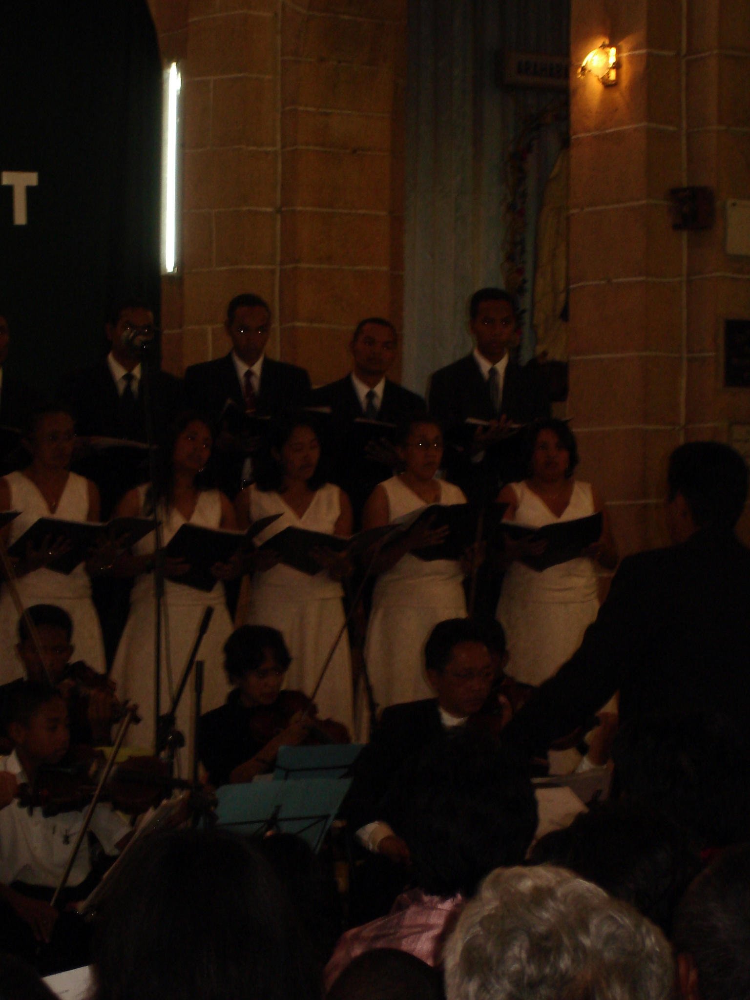
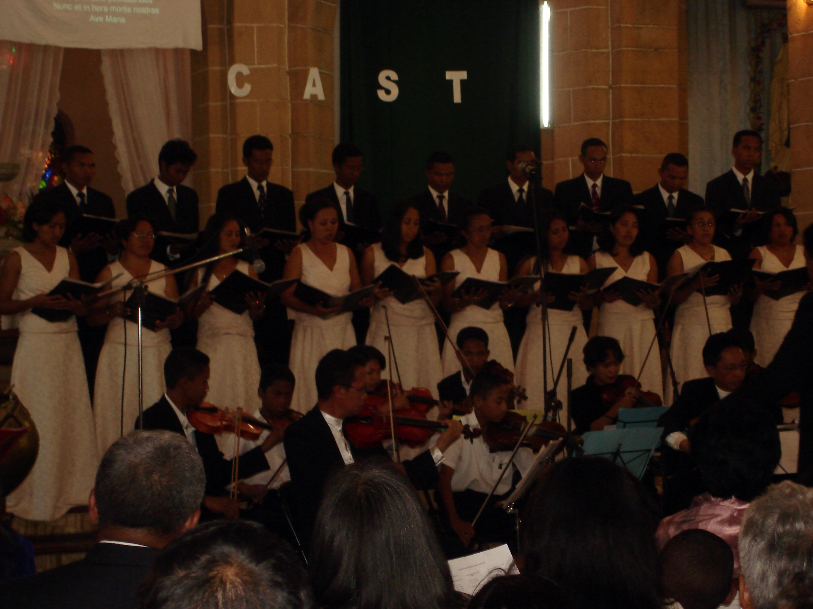
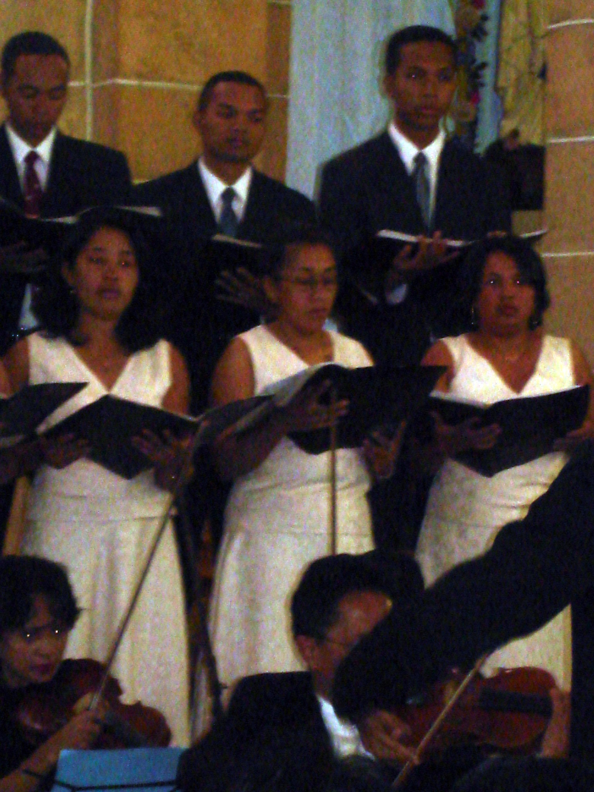

Nos Inspirations
Le CAST puise son souffle dans des œuvres qui parlent au cœur, dans des traditions sacrées et contemporaines. Nos choix musicaux reflètent un équilibre entre ferveur, beauté et universalité.

Chants sacrés
Des mélodies anciennes qui résonnent encore dans les âmes modernes.

Polyphonies du monde
Des voix venues d’ailleurs, unies dans une même prière vocale.

Créations originales
Des œuvres nées de l’âme collective, entre poésie et spiritualité.